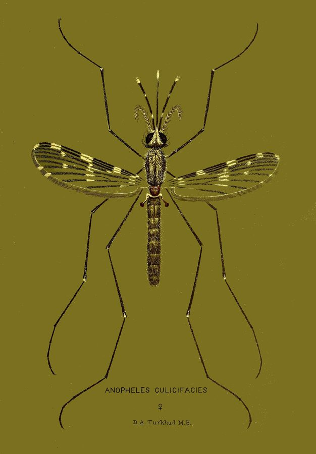

मलेरिया का मच्छरMalaria Mosquito
Anopheles culicifacies · Culicidae · INS-0052

- Scientific name
- Anopheles culicifacies Giles, 1901
- Family
- Culicidae
- Hindi
- मलेरिया का मच्छर
- Status here
- native
- IUCN
- not evaluated
When to look कब देखें
Present all year.
मलेरिया का मच्छर / Malaria Mosquito
Anopheles culicifacies Giles, 1901 — Culicidae
मलेरिया का मच्छर — भूरा, पतला मच्छर जो दीवार पर बैठता है तो पूरा शरीर तिरछा उठाकर, जैसे सिर के बल खड़ा हो; पंखों पर हल्के-गहरे धब्बे। रात में काटता है, दिन में गौशाला और घर के अँधेरे कोनों में सोता है, और नहर, धान के खेत और बरसाती गड्ढों के साफ़, ठहरे, धूप वाले पानी में पनपता है। उत्तर भारत के गाँवों का मलेरिया मुख्यतः यही फैलाता है — इसकी पसंद गाय का खून है, पर इंसान भी चलता है।
Quick Identification त्वरित पहचान
| Feature | Description |
|---|---|
| Size | 4–6 mm, slender |
| Colour | Pale to dark brown, without the bold black-and-white of Aedes |
| Resting posture | Body in a straight line with the proboscis, tilted up from the wall at about 45°: "standing on its head" |
| Wings | Spotted with pale and dark scales in patches along the front edge; the pattern of dark spots on the costa tells the species |
| Palps | In the female as long as the proboscis, with pale bands |
| Larvae | Lie flat and parallel to the water surface, not hanging at an angle; no breathing siphon |
| Behaviour | Bites from dusk through the night, indoors and out; rests in cattle sheds by day |
Field tip: On the wall of a cowshed by day, a mosquito tilted up at an angle with spotted wings is an Anopheles; the common one of the plains, breeding in the canal and paddy water, is culicifacies. Its larvae lying flat at the surface of a sunny pool, unlike the hanging wrigglers of other mosquitoes, are the other sure sign.
हिंदी — कैसे पहचानें: दिन में गौशाला की दीवार पर तिरछा उठकर बैठा भूरा मच्छर, पंखों पर धब्बे — यह एनोफ़िलीज़ है। इसके लार्वा धूप वाले साफ़ पानी की सतह पर सीधे लेटे रहते हैं, दूसरे मच्छरों की तरह लटकते नहीं।
Morphology आकारिकी
Biometrics:
| Measurement | Range |
|---|---|
| Body length | 4–6 mm |
| Wing length | 3–4 mm |
| Egg | 0.5 mm, boat-shaped with floats |
| Larva, 4th stage | 5–7 mm |
| Lifespan, adult female | 2–3 weeks |
Adult: Wings with pale interruptions on the dark costal and first veins, the "spots" used in keys; the female's long palps distinguish all anophelines from other mosquitoes.
Eggs: Laid singly on the water surface, each with a pair of lateral air floats; they do not survive drying, which is why this species, unlike Aedes, needs standing water and vanishes from a dried pool.
Larva: Lies horizontally under the surface film, breathing through spiracles on the back rather than a siphon, and feeds on surface particles. Egg to adult in 10–14 days in warm weather.
A complex, not a species. Anopheles culicifacies is a group of at least five sibling species, A to E, identical to the eye and told apart by chromosomes and DNA; they differ in whether they prefer cattle or people and in how well they carry malaria, which has mattered greatly for control programmes.
हिंदी: पंखों के धब्बे पहचान की कुंजी हैं; मादा के स्पर्शक सूँड़ जितने लंबे। अंडे पानी की सतह पर, तैरने वाले पंखों के साथ; सूखने पर मर जाते हैं, इसलिए पानी सूखते ही यह मच्छर गायब हो जाता है। लार्वा सतह पर लेटा साँस लेता है। असल में यह पाँच जुड़वाँ जातियों (A से E) का समूह है जो देखने में एक जैसी हैं पर खून की पसंद और मलेरिया फैलाने की क्षमता में अलग।
Behaviour & Ecology व्यवहार और पारिस्थितिकी
A mosquito of the irrigated plains. It breeds in clean, still, sunlit water with little vegetation, which the agricultural landscape supplies in abundance: canal seepage, irrigation channels, newly flooded paddy, borrow pits, river-bed pools, hoof-prints and rain pools. Dense weed, shade, pollution and moving water are against it; a well-kept fish pond grows few.
Adults rest by day in cattle sheds and houses, bite from dusk, and feed mostly on cattle, which is why cattle sheds next to houses both attract and, in a sense, divert them. The flight range is a kilometre or two. Larvae are eaten by larvivorous fish, dragonfly nymphs and water beetles; adults by bats, swallows, geckos and spiders.
हिंदी: सिंचित मैदानों का मच्छर। साफ़, ठहरे, धूप वाले, कम घास वाले पानी में पनपता है, जो खेती का इलाका भरपूर देता है — नहर का रिसाव, नालियाँ, नया भरा धान का खेत, खुर के गड्ढे। घनी घास, छाया, गंदगी और बहता पानी इसे नहीं सुहाता। दिन में गौशाला और घर में सोता है, शाम से काटता है, और ज़्यादातर गाय-भैंस का खून लेता है। उड़ान एक-दो किलोमीटर।
Life Cycle / Phenology जीवन चक्र
| Stage / season | Event |
|---|---|
| Egg | On the water surface; hatches in 2–3 days; dies if dried |
| Larva, 7–10 days | Four stages, flat at the surface |
| Pupa, 2–3 days | At the surface; does not feed |
| Adult | Mates in swarms at dusk; female bites every 2–3 days per egg batch |
| July–November | Peak with monsoon and kharif irrigation; the malaria season |
| February–April | Smaller rise with rabi irrigation and canal flow |
हिंदी: अंडा दो-तीन दिन, लार्वा सात-दस दिन, प्यूपा दो-तीन दिन; बरसात और धान की सिंचाई में सबसे ज़्यादा — यही मलेरिया का मौसम; रबी की सिंचाई में फिर थोड़ी बढ़त।
Host Plants or Prey आहार
- Female: blood, mainly cattle and buffalo; people when they are nearer or cattle are few.
- Both sexes: plant sugars.
- Larvae: surface micro-organisms and particles.
Predators / Natural Enemies शत्रु
- In the water: larvivorous fish such as guppy and Gambusia; nymphs of Wandering Glider, Ditch Jewel and other dragonflies; diving beetles; Indian Water Strider.
- In the air and shed: Indian Pipistrelle and other bats, Barn Swallow, House Swift, Asian House Gecko, Long-bodied Cellar Spider.
- Microbes and parasites: Bacillus thuringiensis israelensis; fungi; and the malaria parasite itself, which shortens the mosquito's life a little.
Agricultural / Human Relevance कृषि प्रासंगिकता
Disease. The chief rural vector of malaria in India, responsible for most transmission across the plains, both Plasmodium vivax and the dangerous P. falciparum. Uttar Pradesh records tens of thousands of cases a year, with eastern districts among the worst in outbreak years. Malaria is a fever with chills coming in bouts; it is curable with the right drugs quickly, and dangerous if treated late. Any fever in the malaria season deserves a blood test at the health centre, which is free.
What controls it. Insecticide-treated bed nets, the single most effective tool, since the mosquito bites at night; indoor residual spraying of houses and cattle sheds by the health department, which this species' habit of resting indoors makes effective; and removing or draining small standing pools near homes, filling borrow pits, and stocking ponds and tanks with larvivorous fish. Insecticide resistance in culicifacies is widespread and complicates spraying.
Agriculture. Irrigation creates its breeding water; intermittent drying of paddy fields (alternate wetting and drying, which also saves water) cuts breeding sharply and is a documented malaria-control measure.
Traditional and Ethnobotanical Use: neem smoke and neem oil as repellents have folk standing and some supporting evidence; nothing else recorded.
Today. Malaria has fallen greatly in India since 2000 but remains endemic across the state; culicifacies is still the main rural vector.
Research direction (a lead, not a result). Which sibling species of the complex occur in the district, and what they bite, would decide what control works locally; a university entomology department could find out from a season's collection. Alternate wetting and drying of paddy is the lead a farmer can act on.
हिंदी: बीमारी: भारत के गाँवों का मलेरिया मुख्यतः यही फैलाता है, वाइवैक्स और ख़तरनाक फ़ैल्सीपैरम दोनों। बुख़ार बारी-बारी से ठंड के साथ; सही दवा से जल्दी ठीक, देर से ख़तरा। मलेरिया के मौसम का हर बुख़ार स्वास्थ्य केंद्र पर मुफ़्त जाँच का हक़दार है। रोकथाम: कीटनाशक वाली मच्छरदानी (रात में काटता है), सरकारी छिड़काव, घर के पास के गड्ढे भरना, तालाब में गप्पी मछली, और धान के खेत को बीच-बीच में सुखाना — जो पानी भी बचाता है।
Expected Locally स्थानीय रूप से अपेक्षित
Not a field record. Written from published accounts for eastern Uttar Pradesh. No confirmed local sighting yet — if you have seen it, that is what the atlas needs.
अभी तक स्थानीय पुष्टि नहीं। यह विवरण प्रकाशित स्रोतों से है, किसी अवलोकन से नहीं।
To be expected in every cattle shed and house in the district, breeding in canal seepage, paddy and rain pools, most abundant from August to November. A photograph of an adult resting tilted on a shed wall, or of larvae lying flat on a pool, is a confirmed record for the genus; the species, and the sibling species within it, need an entomologist.
Distribution वितरण
Global range: Iran and Afghanistan through Pakistan, India, Nepal, Sri Lanka and Bangladesh to Myanmar, Thailand and southern China.
In India: Throughout the plains and foothills; the dominant rural vector in the north, centre and west.
In Uttar Pradesh: Statewide.
In Basti district / eastern UP: Expected wherever cattle, people and still water meet, which is everywhere.
Research Questions शोध प्रश्न
Anyone can investigate these | कोई भी इन प्रश्नों की जाँच कर सकता है
- How many tilted mosquitoes rest in the cowshed at noon? / दोपहर में गौशाला की दीवार पर कितने तिरछे मच्छर बैठे हैं? — Count on five days in September with a torch.
- Where are the flat-lying larvae nearest your house? — Check every pool within a hundred metres.
- Does a pool with guppies have larvae? — Compare two pools.
- When does the village's malaria season begin? / गाँव में मलेरिया का मौसम कब शुरू होता है? — Ask the ASHA worker for the months of positive tests.
- Who sleeps under a net, and who does not, and why? — A survey of ten households.
Similar Species मिलती-जुलती प्रजातियाँ
| Species | How to tell apart | हिंदी |
|---|---|---|
| Other Anopheles of the plains (A. stephensi, A. annularis, A. subpictus) | Same tilted posture; the costal wing spots and palp bands differ; stephensi is the urban malaria vector breeding in tanks and wells | पंखों के धब्बों में फ़र्क़; जाँच विशेषज्ञ से |
| Southern House Mosquito (Culex quinquefasciatus) | Rests parallel to the wall with body humped; unspotted wings; breeds in foul drain water | दीवार के समानांतर बैठता है, नाली में पनपता है |
| Yellow Fever Mosquito (Aedes aegypti) | Black and white with a lyre on the back; bites by day; breeds in containers | काला-सफ़ेद, दिन में काटता है |
Field rule: Brown, spotted wings, resting tilted up at an angle, biting at night, larvae lying flat on clean sunlit water: an Anopheles, and in the fields of this district most likely culicifacies.
Taxonomy & Classification वर्गीकरण
Original description. Described by George Michael Giles in 1901 in A Handbook of the Gnats or Mosquitoes, 2nd edition, p. 322, from India. The epithet means "Culex-faced".
Subspecies. Not formally; the taxon is a complex of five sibling species, designated A, B, C, D and E, recognised since the 1980s by chromosome banding and now by DNA.
Family and order placement. Culicidae, subfamily Anophelinae; order Diptera. Anopheles holds about 460 species, some 70 of which transmit human malaria.
Phylogenetic notes. The Anophelinae diverged from the other mosquitoes early; culicifacies belongs to the Myzomyia series of the subgenus Cellia, with the other major Asian and African vectors.
IUCN status rationale. Not evaluated; a vector whose reduction is the goal.
Photo Gallery फोटो गैलरी
Photos needed आवश्यक फोटो
- [ ] Adult resting tilted on a cowshed wall (तिरछा बैठा मच्छर)
- [ ] Larvae lying flat at a pool surface (सतह पर लेटे लार्वा)
- [ ] The breeding pool: seepage, paddy or borrow pit (पानी)
Atlas Connections संबंधित प्रजातियाँ
- Yellow Fever Mosquito and Southern House Mosquito — the other two disease mosquitoes of the village
- Paddy — whose flooded fields breed it, and whose intermittent drying controls it
- Indian Pipistrelle and Barn Swallow — hunt it at dusk
- Wandering Glider — whose nymphs eat its larvae
References संदर्भ
- Giles, G.M. (1901). A Handbook of the Gnats or Mosquitoes, 2nd ed., p. 322. John Bale, Sons & Danielsson, London. [original description]
- Christophers, S.R. (1933). The Fauna of British India, including Ceylon and Burma. Diptera, vol. 4: Family Culicidae, tribe Anophelini. Taylor and Francis, London.
- Rao, T.R. (1984). The Anophelines of India, revised ed. Malaria Research Centre, Indian Council of Medical Research, New Delhi.
- Subbarao, S.K. (1998). Anopheline Species Complexes in South-East Asia. WHO Regional Office for South-East Asia, New Delhi.
- Sharma, V.P. (1996). Re-emergence of malaria in India. Indian Journal of Medical Research 103: 26–45.
- Keiser, J., Singer, B.H. & Utzinger, J. (2005). Reducing the burden of malaria in different eco-epidemiological settings with environmental management: a systematic review. Lancet Infectious Diseases 5(11): 695–708.
- National Center for Vector Borne Diseases Control (2023). Operational Manual for Malaria Elimination in India. Ministry of Health and Family Welfare, New Delhi.
- GBIF Occurrence Data — Anopheles culicifacies, India (2026).
Source file: species/fauna/insects/malaria_mosquito.md